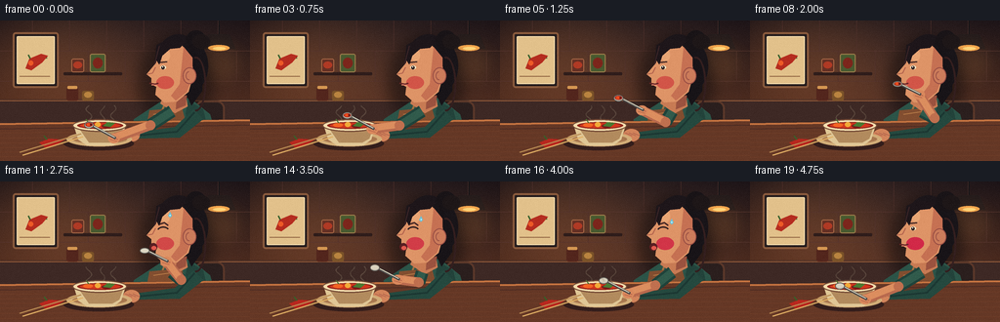
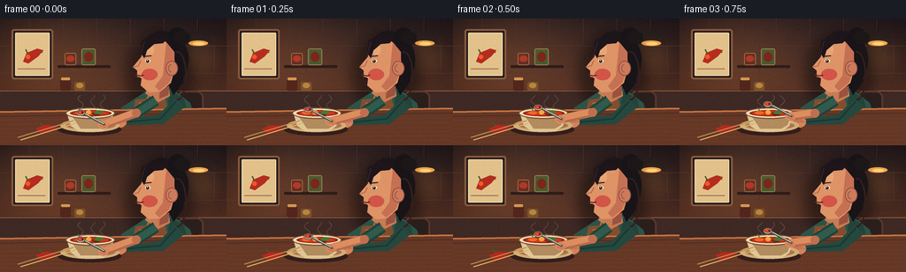

CODING AGENTS AS PIXEL WORLD MODELS
traex/GPT-5.6-Sol · motion_rationality_0030
点击播放 · 原生 RGB 像素
逐轮保存的候选
回放视频、检查图与代码变化。
每份候选均可单独播放。实际图片检查记录在下方工具轨迹中。
候选 01播放与检查图
点击播放 · 原生 RGB 像素


展开代码变化
--- 上一保存版本
+++ 本次保存版本
@@ -0,0 +1,235 @@
+from pathlib import Path
+import math
+import numpy as np
+from PIL import Image, ImageDraw, ImageFilter
+import artifact_io
+
+W,H,N,S = 256,144,20,4
+rng = np.random.default_rng(3017)
+
+def sc(v): return int(round(v*S))
+def box(b): return tuple(sc(x) for x in b)
+def pts(p): return [(sc(x),sc(y)) for x,y in p]
+
+def ellipse(d,b,fill,outline=None,width=1): d.ellipse(box(b),fill=fill,outline=outline,width=sc(width) if outline else 1)
+def rr(d,b,r,fill,outline=None,width=1): d.rounded_rectangle(box(b),radius=sc(r),fill=fill,outline=outline,width=sc(width) if outline else 1)
+def line(d,p,fill,width=1,joint='curve'): d.line(pts(p),fill=fill,width=sc(width),joint=joint)
+def poly(d,p,fill): d.polygon(pts(p),fill=fill)
+def arc(d,b,a0,a1,fill,width=1): d.arc(box(b),a0,a1,fill=fill,width=sc(width))
+
+def bezier(p0,p1,p2,u):
+ q=1-u
+ return (q*q*p0[0]+2*q*u*p1[0]+u*u*p2[0], q*q*p0[1]+2*q*u*p1[1]+u*u*p2[1])
+
+def smooth(x):
+ x=max(0,min(1,x)); return x*x*(3-2*x)
+
+def spoon_state(i):
+ # bowl centre and movement phase: scoop, raise, taste, lower, return
+ if i <= 2:
+ u=smooth(i/2); return bezier((91,107),(91,103),(96,101),u), 0.10+0.1*u, True
+ if i <= 8:
+ u=smooth((i-2)/6); return bezier((96,101),(119,76),(151,65),u), u, True
+ if i <= 10:
+ u=(i-8)/2; return (151+u*1.0,65+u*.5),1.0,i<10
+ if i <= 13:
+ u=smooth((i-10)/3); return bezier((152,66),(145,75),(132,85),u),1-u*.35,False
+ if i <= 18:
+ u=smooth((i-13)/5); return bezier((132,85),(111,101),(93,107),u),.65*(1-u),False
+ return (92,107),0.05,False
+
+def draw_scene(fi):
+ # cinematic warm background gradient with slight vignette
+ yy,xx=np.mgrid[0:H*S,0:W*S]
+ top=np.array([43,32,34.],float); bot=np.array([112,61,38.],float)
+ t=(yy/(H*S-1))[...,None]
+ arr=top*(1-t)+bot*t
+ glow=np.exp(-(((xx-62*S)/(80*S))**2+((yy-37*S)/(60*S))**2))[...,None]
+ arr += glow*np.array([34,19,7])
+ vig=np.clip(((xx-W*S/2)/(W*S/1.25))**2+((yy-H*S/2)/(H*S/1.1))**2,0,1)[...,None]
+ arr-=vig*np.array([21,17,15])
+ im=Image.fromarray(np.uint8(np.clip(arr,0,255)),'RGB')
+ d=ImageDraw.Draw(im)
+
+ # tiled restaurant wall and soft grout
+ for y in (31,62,93): line(d,[(0,y),(256,y)],(87,53,47),.45)
+ for x in range(-5,260,38):
+ line(d,[(x,0),(x,31)],(80,49,44),.4)
+ line(d,[(x+19,31),(x+19,62)],(80,49,44),.4)
+ # framed chili print at left
+ rr(d,(13,12,60,69),3,(36,28,29),(139,91,61),2)
+ rr(d,(17,16,56,65),1,(226,193,139),(244,220,173),1)
+ # stylized chili illustration
+ line(d,[(27,49),(31,42),(39,37),(48,38)],(65,101,48),2)
+ poly(d,[(26,49),(30,39),(42,34),(49,36),(43,43),(32,51)],(181,45,32))
+ ellipse(d,(29,41,34,46),(238,90,39)); line(d,[(31,39),(29,35)],(54,96,43),1.4)
+ line(d,[(20,57),(51,57)],(151,108,72),1)
+ # shelf, jars, hanging lamp
+ rr(d,(65,53,125,56),1,(47,29,27)); rr(d,(73,39,86,53),2,(101,48,36),(164,102,69),1)
+ ellipse(d,(75,42,84,49),(176,58,37)); rr(d,(92,34,108,53),2,(73,90,48),(158,126,76),1)
+ ellipse(d,(95,38,105,49),(124,38,28))
+ line(d,[(224,0),(224,14)],(25,23,25),1.3); poly(d,[(213,14),(235,14),(241,29),(207,29)],(37,28,28))
+ # lamp glow on separate layer
+ glowlay=Image.new('RGBA',im.size,(0,0,0,0)); gd=ImageDraw.Draw(glowlay)
+ gd.ellipse(box((196,18,252,68)),fill=(255,170,74,25)); glowlay=glowlay.filter(ImageFilter.GaussianBlur(sc(9)))
+ im=Image.alpha_composite(im.convert('RGBA'),glowlay).convert('RGB'); d=ImageDraw.Draw(im)
+ ellipse(d,(213,25,235,31),(244,166,77)); ellipse(d,(218,27,231,30),(255,214,121))
+
+ # background counter details
+ rr(d,(0,81,256,106),0,(62,41,37)); line(d,[(0,82),(256,82)],(151,92,57),1)
+ # little condiment jars
+ rr(d,(68,69,80,82),2,(83,38,29)); rr(d,(69,67,79,70),1,(213,151,82))
+ rr(d,(84,72,96,82),2,(123,83,41)); ellipse(d,(86,73,94,79),(185,132,64))
+
+ # rear shadow behind person
+ sh=Image.new('RGBA',im.size,(0,0,0,0)); sd=ImageDraw.Draw(sh)
+ sd.ellipse(box((142,16,219,112)),fill=(10,8,10,120)); sh=sh.filter(ImageFilter.GaussianBlur(sc(7)))
+ im=Image.alpha_composite(im.convert('RGBA'),sh).convert('RGB'); d=ImageDraw.Draw(im)
+
+ # chair behind body
+ rr(d,(200,82,230,145),8,(43,31,30),(91,56,42),2)
+ # torso/back clothing
+ poly(d,[(166,82),(194,79),(215,96),(229,144),(128,144),(137,101)],(44,84,72))
+ poly(d,[(193,82),(208,91),(220,144),(201,144),(190,95)],(35,67,59))
+ line(d,[(169,84),(157,115),(154,144)],(157,111,65),2) # apron strap
+ poly(d,[(153,92),(186,89),(201,144),(143,144)],(130,78,48))
+ line(d,[(157,96),(184,92)],(188,127,74),1)
+ # neck
+ poly(d,[(170,72),(189,69),(192,88),(179,95),(164,85)],(200,123,84))
+ poly(d,[(181,75),(192,70),(190,87),(180,91)],(155,83,64))
+
+ # hair mass behind face
+ ellipse(d,(158,14,207,78),(28,22,26)); ellipse(d,(179,21,213,72),(25,21,25))
+ poly(d,[(194,28),(207,39),(207,72),(196,87),(188,70)],(24,20,24))
+ # loose bun and strand
+ ellipse(d,(190,10,211,31),(25,20,23)); ellipse(d,(197,14,215,29),(30,23,24))
+ arc(d,(190,37,211,93),260,95,(52,31,31),2)
+
+ # face profile turned toward spoon
+ face=[(185,24),(168,25),(161,32),(160,43),(155,49),(150,55),(155,59),(155,65),(160,68),(159,76),(168,84),(181,83),(193,73),(198,55),(196,37)]
+ poly(d,face,(222,148,103))
+ # face warm shadow and ear
+ poly(d,[(188,27),(197,38),(197,58),(191,73),(180,82),(175,77),(184,65)],(198,113,83))
+ ellipse(d,(187,48,201,65),(204,124,91),(151,77,68),1); arc(d,(190,52,197,61),85,265,(158,84,72),1)
+ # forehead shine and cheek tint
+ ellipse(d,(165,29,174,42),(232,166,117))
+ blush_alpha = max(0,(fi-8)/5)
+ ellipse(d,(160,57,178,70),(210,85-int(20*blush_alpha),72))
+ # eyebrow and eye (reaction after bite)
+ react=smooth((fi-9)/3) * (1-smooth((fi-16)/3))
+ if react>.15:
+ line(d,[(162,44),(168,42),(172,45)],(63,35,35),1.6)
+ arc(d,(161,46,173,54),195,338,(49,31,32),1.4)
+ else:
+ line(d,[(162,43),(171,42)],(62,36,34),1.5)
+ ellipse(d,(164,46,170,50),(250,231,194)); ellipse(d,(165,46.5,168.5,50),(45,31,31)); ellipse(d,(166,47,167,48),(255,255,240))
+ # nose line and mouth changes
+ line(d,[(159,48),(156,54),(151,55)],(171,91,74),1)
+ if fi in (9,10):
+ ellipse(d,(151,62,160,69),(86,31,34)); ellipse(d,(152,63,158,66),(237,131,117))
+ elif react>.25:
+ ellipse(d,(153,63,161,71),(91,32,35)); ellipse(d,(155,66,160,70),(227,91,79))
+ else:
+ line(d,[(153,64),(159,65),(162,64)],(105,39,40),1.5)
+ line(d,[(155,66),(160,66)],(239,139,116),.7)
+ # hair fringe over forehead
+ poly(d,[(159,39),(160,25),(172,19),(190,22),(184,28),(174,29),(166,36),(163,45)],(30,22,26))
+ line(d,[(163,26),(158,45)],(60,37,39),1)
+
+ # table and front edge
+ poly(d,[(0,105),(256,101),(256,144),(0,144)],(101,56,38))
+ line(d,[(0,106),(256,102)],(197,116,65),2)
+ line(d,[(0,111),(256,107)],(73,42,34),1)
+ # subtle wood grain
+ for j in range(7):
+ y=115+j*5 + .4*math.sin(fi*.2+j)
+ line(d,[(0,y),(256,y-2)],(121,67,42),.55)
+
+ # left arm behind bowl: sleeve and forearm to bowl rim
+ poly(d,[(198,91),(208,101),(184,120),(139,121),(136,115),(179,109)],(37,73,63))
+ line(d,[(199,94),(181,114),(140,118)],(28,56,51),2)
+ # hand steadying bowl
+ ellipse(d,(126,111,143,124),(211,132,91));
+ for x in [128,132,136]: line(d,[(x,115),(x+7,118)],(167,91,72),.7)
+
+ # bowl shadow
+ ellipse(d,(65,119,137,133),(52,30,28))
+ # plate
+ ellipse(d,(68,114,135,129),(210,173,120)); ellipse(d,(74,117,130,126),(168,119,79))
+ # bowl body
+ poly(d,[(75,106),(129,106),(124,122),(116,128),(89,128),(80,122)],(224,199,150))
+ poly(d,[(82,112),(126,110),(122,121),(115,125),(91,125)],(178,139,94))
+ ellipse(d,(74,101,130,114),(244,221,174),(118,77,56),1.2)
+ ellipse(d,(79,104,126,111),(145,39,29))
+ ellipse(d,(82,105,123,110),(210,55,30))
+ # chili oil highlights and ingredients
+ ellipse(d,(85,105,95,109),(243,101,36)); ellipse(d,(104,106,114,110),(114,26,25)); ellipse(d,(97,104,103,109),(242,169,56))
+ poly(d,[(110,104),(118,105),(113,109),(105,108)],(73,122,50)); line(d,[(91,105),(88,101)],(74,115,47),1)
+ # foreground chili and chopsticks
+ poly(d,[(40,125),(50,121),(66,122),(58,127),(46,130)],(185,39,30)); line(d,[(48,122),(45,118)],(54,98,40),1.2)
+ line(d,[(20,135),(83,116)],(186,140,84),1.3); line(d,[(23,138),(85,119)],(225,176,101),1.3)
+
+ # moving spoon, hand, and foreground arm
+ (sx,sy),phase,loaded=spoon_state(fi)
+ # handle-end hand follows spoon; orientation varies naturally
+ hx=sx+26-4*phase; hy=sy+11+3*(1-phase)
+ # elbow swings outward while lifting
+ ex=150+39*phase; ey=108-8*phase
+ shoulder=(176,93)
+ # sleeve upper arm
+ line(d,[shoulder,(ex,ey)],(31,67,59),13)
+ line(d,[shoulder,(ex,ey)],(49,91,76),8)
+ # forearm skin
+ line(d,[(ex,ey),(hx,hy)],(185,106,78),10)
+ line(d,[(ex-1,ey-1),(hx,hy-1)],(220,142,95),7)
+ # elbow shadow
+ ellipse(d,(ex-5,ey-5,ex+5,ey+5),(192,112,79))
+ # fingers wrapped around spoon handle near H
+ ellipse(d,(hx-6,hy-5,hx+6,hy+5),(218,137,93))
+ line(d,[(hx-3,hy-2),(hx+4,hy+1)],(160,82,67),.8)
+ line(d,[(hx-4,hy+1),(hx+3,hy+3)],(171,91,68),.7)
+ # spoon: metallic handle from hand to spoon bowl, highlight
+ line(d,[(hx+2,hy),(sx+2,sy)],(76,74,74),3)
+ line(d,[(hx+1,hy-1),(sx+1,sy-1)],(225,218,193),1)
+ # spoon bowl aligned approximately horizontal for eating
+ if phase>.75:
+ ellipse(d,(sx-5,sy-3,sx+5,sy+3),(191,189,176),(86,83,78),.7)
+ ellipse(d,(sx-3.8,sy-2,sx+3.7,sy+1.8),(142,50,38) if loaded else (222,216,196))
+ else:
+ ellipse(d,(sx-5,sy-3.5,sx+5,sy+3.5),(190,187,173),(83,78,74),.7)
+ ellipse(d,(sx-3.8,sy-2.4,sx+3.8,sy+1.7),(173,43,30) if loaded else (218,210,191))
+ if loaded:
+ ellipse(d,(sx-2.4,sy-1.8,sx+1.5,sy+1),(238,77,29)); ellipse(d,(sx+1,sy-1.3,sx+3,sy+.6),(100,27,25))
+
+ # steam curls animate upwards from bowl, and heat after bite
+ steam=Image.new('RGBA',im.size,(0,0,0,0)); st=ImageDraw.Draw(steam)
+ for k,(bx,amp) in enumerate([(91,3.0),(105,2.3),(116,2.8)]):
+ points=[]
+ for q in range(18):
+ y=102-q*.9
+ x=bx+amp*math.sin(q*.38+fi*.45+k*1.4)
+ points.append((sc(x),sc(y)))
+ st.line(points,fill=(255,225,188,110),width=sc(1))
+ steam=steam.filter(ImageFilter.GaussianBlur(sc(.45)))
+ im=Image.alpha_composite(im.convert('RGBA'),steam)
+ d=ImageDraw.Draw(im)
+
+ # sweat bead and spicy warmth reaction
+ if 11 <= fi <= 16:
+ dropx=174+(fi-11)*.35; dropy=34+(fi-11)*1.4
+ poly(d,[(dropx,dropy-3),(dropx-2,dropy+1),(dropx,dropy+3),(dropx+2,dropy+1)],(104,195,220,230))
+ ellipse(d,(dropx-.5,dropy,dropx+.6,dropy+1.3),(224,250,244,240))
+ # tiny crumbs/sauce at lip at bite moment
+ if fi in (9,10): ellipse(d,(151,66,153,68),(201,49,30))
+
+ # foreground vignette and fine coherent grain
+ rgb=np.array(im.convert('RGB').resize((W,H),Image.Resampling.LANCZOS)).astype(np.int16)
+ # low amplitude fixed grain plus slight frame grain gives texture without flicker
+ local=np.random.default_rng(900+fi)
+ grain=local.normal(0,1.15,(H,W,1))
+ rgb=np.clip(rgb+grain,0,255).astype(np.uint8)
+ return rgb
+
+frames=np.stack([draw_scene(i) for i in range(N)],axis=0)
+artifact_io.save(frames,Path(__file__).resolve().parent)
+print('saved',frames.shape,frames.dtype)
可观测工具轨迹
实际执行的命令与返回图片。
命令 1exit 0
/bin/bash -lc "cat prompt.txt && printf '\\n---RULES---\\n' && cat GENERATION_RULES.md && printf '\\n---SPEC---\\n' && cat task_spec.json"
命令 2exit 0
/bin/bash -lc "find . -maxdepth 2 -type f -printf '%p %s bytes\\n' | sort"
命令 3exit 0
/bin/bash -lc "which ffmpeg || true; which convert || true; python3 - <<'PY' mods=['PIL','numpy','cv2','imageio','moviepy'] for m in mods: try: x=__import__(m); print(m,'OK',getattr(x,'__version__','')) except Exception as e: print(m,'NO',e) PY"
命令 4exit 0
/bin/bash -lc 'cat artifact_io.py'
命令 5exit 0
/bin/bash -lc "cat > generate.py <<'PY'
from pathlib import Path
import math
import numpy as np
from PIL import Image, ImageDraw, ImageFilter
import artifact_io
W,H,N,S = 256,144,20,4
rng = np.random.default_rng(3017)
def sc(v): return int(round(v*S))
def box(b): return tuple(sc(x) for x in b)
def pts(p): return [(sc(x),sc(y)) for x,y in p]
def ellipse(d,b,fill,outline=None,width=1): d.ellipse(box(b),fill=fill,outline=outline,width=sc(width) if outline else 1)
def rr(d,b,r,fill,outline=None,width=1): d.rounded_rectangle(box(b),radius=sc(r),fill=fill,outline=outline,width=sc(width) if outline else 1)
def line(d,p,fill,width=1,joint='curve'): d.line(pts(p),fill=fill,width=sc(width),joint=joint)
def poly(d,p,fill): d.polygon(pts(p),fill=fill)
def arc(d,b,a0,a1,fill,width=1): d.arc(box(b),a0,a1,fill=fill,width=sc(width))
def bezier(p0,p1,p2,u):
q=1-u
return (q*q*p0[0]+2*q*u*p1[0]+u*u*p2[0], q*q*p0[1]+2*q*u*p1[1]+u*u*p2[1])
def smooth(x):
x=max(0,min(1,x)); return x*x*(3-2*x)
def spoon_state(i):
# bowl centre and movement phase: scoop, raise, taste, lower, return
if i <= 2:
u=smooth(i/2); return bezier((91,107),(91,103),(96,101),u), 0.10+0.1*u, True
if i <= 8:
u=smooth((i-2)/6); return bezier((96,101),(119,76),(151,65),u), u, True
if i <= 10:
u=(i-8)/2; return (151+u*1.0,65+u*.5),1.0,i<10
if i <= 13:
u=smooth((i-10)/3); return bezier((152,66),(145,75),(132,85),u),1-u*.35,False
if i <= 18:
u=smooth((i-13)/5); return bezier((132,85),(111,101),(93,107),u),.65*(1-u),False
return (92,107),0.05,False
def draw_scene(fi):
# cinematic warm background gradient with slight vignette
yy,xx=np.mgrid[0:H*S,0:W*S]
top=np.array([43,32,34.],float); bot=np.array([112,61,38.],float)
t=(yy/(H*S-1))[...,None]
arr=top*(1-t)+bot*t
glow=np.exp(-(((xx-62*S)/(80*S))**2+((yy-37*S)/(60*S))**2))[...,None]
arr += glow*np.array([34,19,7])
vig=np.clip(((xx-W*S/2)/(W*S/1.25))**2+((yy-H*S/2)/(H*S/1.1))**2,0,1)[...,None]
arr-=vig*np.array([21,17,15])
im=Image.fromarray(np.uint8(np.clip(arr,0,255)),'RGB')
d=ImageDraw.Draw(im)
# tiled restaurant wall and soft grout
for y in (31,62,93): line(d,[(0,y),(256,y)],(87,53,47),.45)
for x in range(-5,260,38):
line(d,[(x,0),(x,31)],(80,49,44),.4)
line(d,[(x+19,31),(x+19,62)],(80,49,44),.4)
# framed chili print at left
rr(d,(13,12,60,69),3,(36,28,29),(139,91,61),2)
rr(d,(17,16,56,65),1,(226,193,139),(244,220,173),1)
# stylized chili illustration
line(d,[(27,49),(31,42),(39,37),(48,38)],(65,101,48),2)
poly(d,[(26,49),(30,39),(42,34),(49,36),(43,43),(32,51)],(181,45,32))
ellipse(d,(29,41,34,46),(238,90,39)); line(d,[(31,39),(29,35)],(54,96,43),1.4)
line(d,[(20,57),(51,57)],(151,108,72),1)
# shelf, jars, hanging lamp
rr(d,(65,53,125,56),1,(47,29,27)); rr(d,(73,39,86,53),2,(101,48,36),(164,102,69),1)
ellipse(d,(75,42,84,49),(176,58,37)); rr(d,(92,34,108,53),2,(73,90,48),(158,126,76),1)
ellipse(d,(95,38,105,49),(124,38,28))
line(d,[(224,0),(224,14)],(25,23,25),1.3); poly(d,[(213,14),(235,14),(241,29),(207,29)],(37,28,28))
# lamp glow on separate layer
glowlay=Image.new('RGBA',im.size,(0,0,0,0)); gd=ImageDraw.Draw(glowlay)
gd.ellipse(box((196,18,252,68)),fill=(255,170,74,25)); glowlay=glowlay.filter(ImageFilter.GaussianBlur(sc(9)))
im=Image.alpha_composite(im.convert('RGBA'),glowlay).convert('RGB'); d=ImageDraw.Draw(im)
ellipse(d,(213,25,235,31),(244,166,77)); ellipse(d,(218,27,231,30),(255,214,121))
# background counter details
rr(d,(0,81,256,106),0,(62,41,37)); line(d,[(0,82),(256,82)],(151,92,57),1)
# little condiment jars
rr(d,(68,69,80,82),2,(83,38,29)); rr(d,(69,67,79,70),1,(213,151,82))
rr(d,(84,72,96,82),2,(123,83,41)); ellipse(d,(86,73,94,79),(185,132,64))
# rear shadow behind person
sh=Image.new('RGBA',im.size,(0,0,0,0)); sd=ImageDraw.Draw(sh)
sd.ellipse(box((142,16,219,112)),fill=(10,8,10,120)); sh=sh.filter(ImageFilter.GaussianBlur(sc(7)))
im=Image.alpha_composite(im.convert('RGBA'),sh).convert('RGB'); d=ImageDraw.Draw(im)
# chair behind body
rr(d,(200,82,230,145),8,(43,31,30),(91,56,42),2)
# torso/back clothing
poly(d,[(166,82),(194,79),(215,96),(229,144),(128,144),(137,101)],(44,84,72))
poly(d,[(193,82),(208,91),(220,144),(201,144),(190,95)],(35,67,59))
line(d,[(169,84),(157,115),(154,144)],(157,111,65),2) # apron strap
poly(d,[(153,92),(186,89),(201,144),(143,144)],(130,78,48))
line(d,[(157,96),(184,92)],(188,127,74),1)
# neck
poly(d,[(170,72),(189,69),(192,88),(179,95),(164,85)],(200,123,84))
poly(d,[(181,75),(192,70),(190,87),(180,91)],(155,83,64))
# hair mass behind face
ellipse(d,(158,14,207,78),(28,22,26)); ellipse(d,(179,21,213,72),(25,21,25))
poly(d,[(194,28),(207,39),(207,72),(196,87),(188,70)],(24,20,24))
# loose bun and strand
ellipse(d,(190,10,211,31),(25,20,23)); ellipse(d,(197,14,215,29),(30,23,24))
arc(d,(190,37,211,93),260,95,(52,31,31),2)
# face profile turned toward spoon
face=[(185,24),(168,25),(161,32),(160,43),(155,49),(150,55),(155,59),(155,65),(160,68),(159,76),(168,84),(181,83),(193,73),(198,55),(196,37)]
poly(d,face,(222,148,103))
# face warm shadow and ear
poly(d,[(188,27),(197,38),(197,58),(191,73),(180,82),(175,77),(184,65)],(198,113,83))
ellipse(d,(187,48,201,65),(204,124,91),(151,77,68),1); arc(d,(190,52,197,61),85,265,(158,84,72),1)
# forehead shine and cheek tint
ellipse(d,(165,29,174,42),(232,166,117))
blush_alpha = max(0,(fi-8)/5)
ellipse(d,(160,57,178,70),(210,85-int(20*blush_alpha),72))
# eyebrow and eye (reaction after bite)
react=smooth((fi-9)/3) * (1-smooth((fi-16)/3))
if react>.15:
line(d,[(162,44),(168,42),(172,45)],(63,35,35),1.6)
arc(d,(161,46,173,54),195,338,(49,31,32),1.4)
else:
line(d,[(162,43),(171,42)],(62,36,34),1.5)
ellipse(d,(164,46,170,50),(250,231,194)); ellipse(d,(165,46.5,168.5,50),(45,31,31)); ellipse(d,(166,47,167,48),(255,255,240))
# nose line and mouth changes
line(d,[(159,48),(156,54),(151,55)],(171,91,74),1)
if fi in (9,10):
ellipse(d,(151,62,160,69),(86,31,34)); ellipse(d,(152,63,158,66),(237,131,117))
elif react>.25:
ellipse(d,(153,63,161,71),(91,32,35)); ellipse(d,(155,66,160,70),(227,91,79))
else:
line(d,[(153,64),(159,65),(162,64)],(105,39,40),1.5)
line(d,[(155,66),(160,66)],(239,139,116),.7)
# hair fringe over forehead
poly(d,[(159,39),(160,25),(172,19),(190,22),(184,28),(174,29),(166,36),(163,45)],(30,22,26))
line(d,[(163,26),(158,45)],(60,37,39),1)
# table and front edge
poly(d,[(0,105),(256,101),(256,144),(0,144)],(101,56,38))
line(d,[(0,106),(256,102)],(197,116,65),2)
line(d,[(0,111),(256,107)],(73,42,34),1)
# subtle wood grain
for j in range(7):
y=115+j*5 + .4*math.sin(fi*.2+j)
line(d,[(0,y),(256,y-2)],(121,67,42),.55)
# left arm behind bowl: sleeve and forearm to bowl rim
poly(d,[(198,91),(208,101),(184,120),(139,121),(136,115),(179,109)],(37,73,63))
line(d,[(199,94),(181,114),(140,118)],(28,56,51),2)
# hand steadying bowl
ellipse(d,(126,111,143,124),(211,132,91));
for x in [128,132,136]: line(d,[(x,115),(x+7,118)],(167,91,72),.7)
# bowl shadow
ellipse(d,(65,119,137,133),(52,30,28))
# plate
ellipse(d,(68,114,135,129),(210,173,120)); ellipse(d,(74,117,130,126),(168,119,79))
# bowl body
poly(d,[(75,106),(129,106),(124,122),(116,128),(89,128),(80,122)],(224,199,150))
poly(d,[(82,112),(126,110),(122,121),(115,125),(91,125)],(178,139,94))
ellipse(d,(74,101,130,114),(244,221,174),(118,77,56),1.2)
ellipse(d,(79,104,126,111),(145,39,29))
ellipse(d,(82,105,123,110),(210,55,30))
# chili oil highlights and ingredients
ellipse(d,(85,105,95,109),(243,101,36)); ellipse(d,(104,106,114,110),(114,26,25)); ellipse(d,(97,104,103,109),(242,169,56))
poly(d,[(110,104),(118,105),(113,109),(105,108)],(73,122,50)); line(d,[(91,105),(88,101)],(74,115,47),1)
# foreground chili and chopsticks
poly(d,[(40,125),(50,121),(66,122),(58,127),(46,130)],(185,39,30)); line(d,[(48,122),(45,118)],(54,98,40),1.2)
line(d,[(20,135),(83,116)],(186,140,84),1.3); line(d,[(23,138),(85,119)],(225,176,101),1.3)
# moving spoon, hand, and foreground arm
(sx,sy),phase,loaded=spoon_state(fi)
# handle-end hand follows spoon; orientation varies naturally
hx=sx+26-4*phase; hy=sy+11+3*(1-phase)
# elbow swings outward while lifting
ex=150+39*phase; ey=108-8*phase
shoulder=(176,93)
# sleeve upper arm
line(d,[shoulder,(ex,ey)],(31,67,59),13)
line(d,[shoulder,(ex,ey)],(49,91,76),8)
# forearm skin
line(d,[(ex,ey),(hx,hy)],(185,106,78),10)
line(d,[(ex-1,ey-1),(hx,hy-1)],(220,142,95),7)
# elbow shadow
ellipse(d,(ex-5,ey-5,ex+5,ey+5),(192,112,79))
# fingers wrapped around spoon handle near H
ellipse(d,(hx-6,hy-5,hx+6,hy+5),(218,137,93))
line(d,[(hx-3,hy-2),(hx+4,hy+1)],(160,82,67),.8)
line(d,[(hx-4,hy+1),(hx+3,hy+3)],(171,91,68),.7)
# spoon: metallic handle from hand to spoon bowl, highlight
line(d,[(hx+2,hy),(sx+2,sy)],(76,74,74),3)
line(d,[(hx+1,hy-1),(sx+1,sy-1)],(225,218,193),1)
# spoon bowl aligned approximately horizontal for eating
if phase>.75:
ellipse(d,(sx-5,sy-3,sx+5,sy+3),(191,189,176),(86,83,78),.7)
ellipse(d,(sx-3.8,sy-2,sx+3.7,sy+1.8),(142,50,38) if loaded else (222,216,196))
else:
ellipse(d,(sx-5,sy-3.5,sx+5,sy+3.5),(190,187,173),(83,78,74),.7)
ellipse(d,(sx-3.8,sy-2.4,sx+3.8,sy+1.7),(173,43,30) if loaded else (218,210,191))
if loaded:
ellipse(d,(sx-2.4,sy-1.8,sx+1.5,sy+1),(238,77,29)); ellipse(d,(sx+1,sy-1.3,sx+3,sy+.6),(100,27,25))
# steam curls animate upwards from bowl, and heat after bite
steam=Image.new('RGBA',im.size,(0,0,0,0)); st=ImageDraw.Draw(steam)
for k,(bx,amp) in enumerate([(91,3.0),(105,2.3),(116,2.8)]):
points=[]
for q in range(18):
y=102-q*.9
x=bx+amp*math.sin(q*.38+fi*.45+k*1.4)
points.append((sc(x),sc(y)))
st.line(points,fill=(255,225,188,110),width=sc(1))
steam=steam.filter(ImageFilter.GaussianBlur(sc(.45)))
im=Image.alpha_composite(im.convert('RGBA'),steam)
d=ImageDraw.Draw(im)
# sweat bead and spicy warmth reaction
if 11 <= fi <= 16:
dropx=174+(fi-11)*.35; dropy=34+(fi-11)*1.4
poly(d,[(dropx,dropy-3),(dropx-2,dropy+1),(dropx,dropy+3),(dropx+2,dropy+1)],(104,195,220,230))
ellipse(d,(dropx-.5,dropy,dropx+.6,dropy+1.3),(224,250,244,240))
# tiny crumbs/sauce at lip at bite moment
if fi in (9,10): ellipse(d,(151,66,153,68),(201,49,30))
# foreground vignette and fine coherent grain
rgb=np.array(im.convert('RGB').resize((W,H),Image.Resampling.LANCZOS)).astype(np.int16)
# low amplitude fixed grain plus slight frame grain gives texture without flicker
local=np.random.default_rng(900+fi)
grain=local.normal(0,1.15,(H,W,1))
rgb=np.clip(rgb+grain,0,255).astype(np.uint8)
return rgb
frames=np.stack([draw_scene(i) for i in range(N)],axis=0)
artifact_io.save(frames,Path(__file__).resolve().parent)
print('saved',frames.shape,frames.dtype)
PY
python3 generate.py
ls -lh pixels.npz index.html inspection.png frames/00.png"命令 6exit 0
/bin/bash -lc "python3 - <<'PY'
import numpy as np, json
from PIL import Image
z=np.load('pixels.npz')['pixels']
assert z.shape==(144,256,20) and z.dtype==np.uint32
ims=np.stack([np.asarray(Image.open(f'frames/{i:02d}.png').convert('RGB')) for i in range(20)])
assert ims.shape==(20,144,256,3) and ims.dtype==np.uint8
assert all(np.any(ims[i]"'!=ims[i-1]) for i in range(1,20))
print('"'validated RGB:',ims.shape,ims.dtype)
print('mean adjacent pixel delta:',round(float(np.abs(ims[1:].astype(int)-ims[:-1].astype(int)).mean()),3))
print('unique frame hashes:',len({hash(x.tobytes()) for x in ims}))
print('required artifacts:',all(__import__('pathlib').Path(x).exists() for x in ['pixels.npz','index.html','inspection.png','transition_check.png']))
PY"保存候选 1 份；完成命令 6 次；可验证图片返回 0 张。原始 API 响应与完整日志保留在本地。